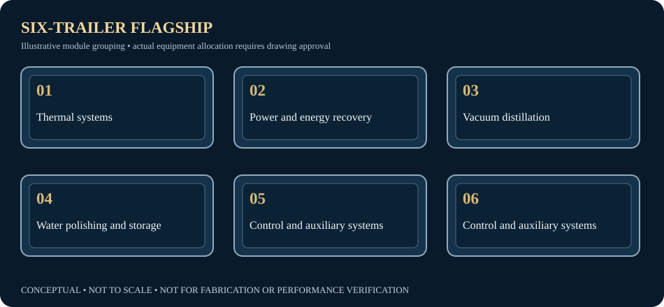

Professional diligence gateway
Texas investment pathway
The U.S. development opportunity and six-trailer integrated utility platform, presented for professional inquiry and controlled review.
Controlled source document
Texas Gold IPO Investment Package
The complete October 21, 2026 management package is held outside the public website. It includes extensive source documentation and professional-review material.
Access: request directly from Trinity management. The website does not offer public download, investment subscription, or transaction execution.
Request Texas package / meeting
The six-trailer schematic is a conceptual visual grouping. The authoritative engineering architecture must be checked against the approved drawings before external technical reliance.